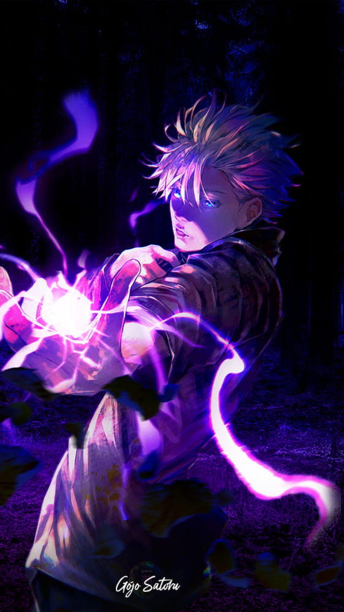

Set Your Heart Ablaze!
(Satoru Gojo)
Dear Fellow Slayer,
Go ahead and live with your head held high. No matter how devastated you may be by your own weakness or uselessness... Grit your teeth and look straight ahead.
Keep fighting!
⚔️ Satoru Gojo Corps